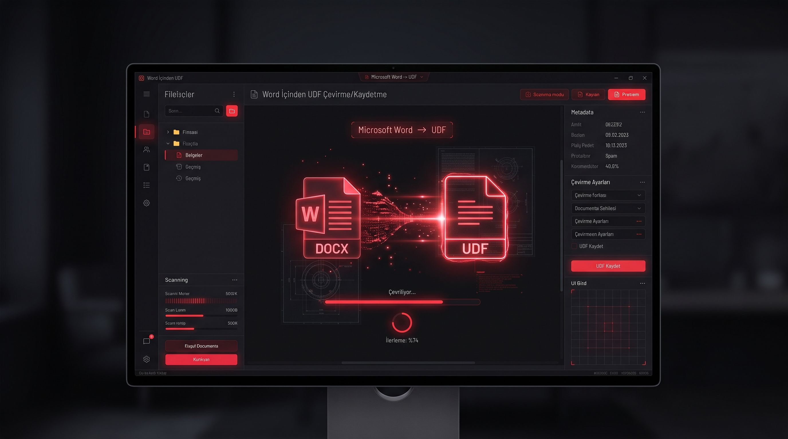
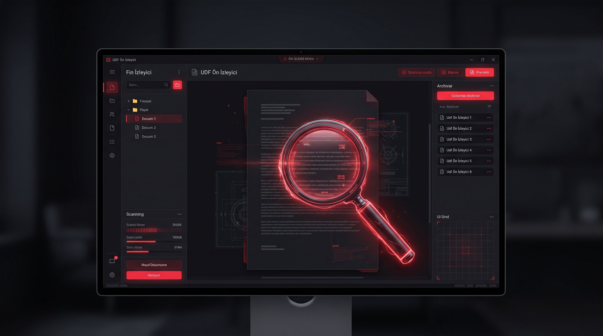

Bilirkişilerin iş süreçlerini otomatize eden ve UDF formatındaki belgeleri işlemeyi hızlandıran araçlar.

WORDUDF Kaydedici →
Microsoft Word belgelerinizi UDF formatına Windows Word içinden tek tıkla, tablolar ve resimler bozulmadan dönüştürün ve doğrudan kaydedin.

UDF Ön İzleme →
UDF uzantılı dosyaların içeriklerini Uyap Editör ile açmaya gerek kalmadan hızlıca görüntüleyin. İçeriği kopyalayın

Bilirkişi İş Takip ve Toplu Dosya İndirici →
Atanan bilirkişilik dosyalarını takip edin, notlar alın ve UYAP Portal üzerinden toplu olarak indirin.

HTS Analitika →
Karmaşık HTS ve baz istasyonu kayıtlarını analiz edin, haritalandırın ve raporlayın.
Hakkımda & İletişim
Bilirkişi Yardımcı Yazılımları Geliştiricisi
Merhaba, ben <byy/> projelerinin geliştiricisiyim. Adli bilirkişilik süreçlerinde yaşanan zaman kaybını azaltmak ve raporlama standartlarını yükseltmek amacıyla özel yazılım çözümleri üretiyorum.
Geliştirdiğim uygulamalar; masaüstü entegrasyonu, yüksek performans, veri güvenliği ve kullanıcı dostu arayüz ilkeleri benimsenerek hazırlanmıştır.
WORDUDF Kaydedici
Microsoft Word belgelerinizi UDF formatına dönüştürmenin en hızlı yolu.

Yazılım Hakkında
WORDUDF Kaydedici, hazırladığınız Word dokümanlarını UYAP uyumlu UDF formatına hatasız şekilde dönüştüren özel bir entegrasyon aracıdır.
Adli süreçlerde sıkça karşılaşılan format uyuşmazlıklarını ve içerik kaymalarını önleyerek hazırladığınız dilekçe veya raporların çoğu zaman birebir aynı yapıyla UDF formatına çevrilip kaydedilmesini sağlar.
Yapmanız gereken tek şey Windows Word içinde iken UDF Kaydet butonuna tıklamaktır. UDF formatı Word programının birleştirilmiş tablolar gibi bazı özelliklerini desteklemediğinden tabloları resim olarak kaydetmeyi seçebilir, resim kalitesini seçebilirsiniz. Menüde yer alan UDF kısmına geçtiğinizde çevrim ayarlarını yapabilirsiniz
UDF Ön İzleme
UYAP ve UDF dosyalarını anında görüntüleyin.

Yazılım Hakkında
UDF Ön İzleme aracı, UYAP Editör programını açmaya gerek kalmadan .udf uzantılı dosyaların içeriğini saniyeler içinde incelemenize imkan tanır. Dosyanın üzerine gelip bir kez tıklamanız yeterlidir.
Özellikle çok sayıda UDF belgesinin içeriklerine hızlıca göz atmanız gerektiğinde büyük zaman tasarrufu sağlar.

Ön izleme yapabilmek için öncelikle Windows Dosya Gezgini'nde ön izleme paneli açık olmalıdır. Ön izleme panelini Windows Gezgini'nde iken ALP+P tuşlarına basarak açıp kapatabilirsiniz.
Bilirkişi İş Takip ve Toplu Dosya İndirici
Dosya takibi ve UYAP toplu indirme otomasyonu.
Yazılım Hakkında
Tarafınıza atanan bilirkişilik dosyalarını düzenli bir panel üzerinden takip etmenize ve dosya eklerini tek tıkla toplu olarak bilgisayarınıza indirmenize olanak tanır.
Rutin indirme süreçlerini otomatikleştirerek iş yükünü hafifletir.
Tüm verileri Uyap Bilirkişi Portal hesabınızdan çeker, otomatik güncelleme yapar.
Yaklaşan, tamamlanan, gecikmeli vs. dosyalarınızı takip edebilir, notlar alabilirsiniz.
Raporlarınızla ilgili tüm bilgileri görebilir,yaklaşan, tamamlanan, gecikmeli vs. dosyalarınızı takip edebilir, notlar alabilirsiniz.
Filtreleme ve arama yapabilir, excel formatında dışa aktarabilirsiniz.
İsterseniz toplu indirme modülü ile seçtiğiniz dosyanın altındaki tüm evrakları ekleri ile birlikte indirebilir, istemediğiniz evrakları, evrak türlerini indirme dışında tutabilirsiniz. İndirdiğiniz dosyalar bilgisayarınıza evrak_**** şeklinde değil Tarih_dosya_adı şeklinde kaydedilir.
HTS Analitika
Gelişmiş HTS veri analizi, haritalama ve raporlama sistemi.
Yazılım Hakkında
HTS Analitika; baz istasyonu kayıtları, arama/aranma istatistikleri ve iletişim trafiği verilerini saniyeler içinde işleyip interaktif haritalar ve grafikler üzerinden görselleştirir.
Karmaşık telekomünikasyon verilerini anlaşılır raporlara dönüştürerek adli süreçlerde teknik karar vermeyi kolaylaştırır.
Amazon Hediye Kartı Gönderimi
Projelerin ücretsiz ve açık gelişmesini desteklemek için Amazon üzerinden e-posta hediye kartı gönderebilirsiniz.
Amazon Hediye Kartı Sayfasına Gidin
Aşağıdaki butona tıklayarak Amazon.com.tr E-Posta Hediye Kartı satın alma sayfasına ulaşın.
Tutar ve Tasarım Seçin
Dilediğiniz bir tutarı belirleyin (Örn: 100 TL, 250 TL, 500 TL).
Teslimat Bilgilerini Girin
Alıcı e-posta adresine destek@byy.com.tr yazarak satın alma işlemini tamamlayın.
Trendyol Dijital Hediye Çeki
Trendyol Dijital Hediye Çeki oluşturarak projelerimize katkıda bulunabilirsiniz.
Trendyol Hediye Çeki Bölümüne Gidin
Trendyol mobil uygulaması veya web sitesindeki Dijital Hediye Çeki sayfasına geçiş yapın.
Miktarı Seçin
Bütçenize uygun hediye çek tutarını seçin.
Kodu İletin
Oluşturulan Hediye Çeki kodunu destek@byy.com.tr adresine e-posta olarak iletebilirsiniz.